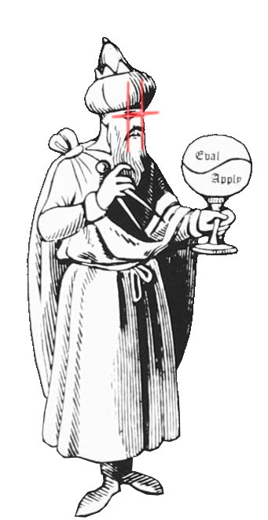

re:Clojure
Virtual Conference
December 3-4, 2021
re:Clojure is a *free*, community-driven conference that brings together knowledgeable speakers to present new and exciting topics on all things Clojure and ClojureScript.
It is our intention to keep the conferences lean, inclusive and rewarding to all attendees and to promote other Clojure conferences in Europe and worldwide.
Want to be part of the show?
Call for papers are now open! 🥳
ApplyQuestions? Email us at cfp@reclojure.orgWe are thrilled to announce the keynote speaker of this year

Gerald Jay Sussman